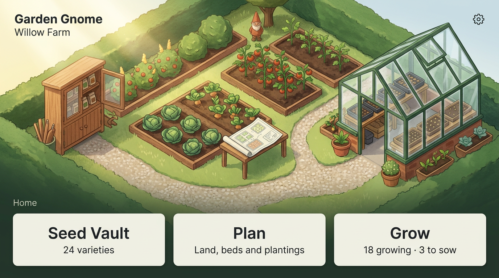
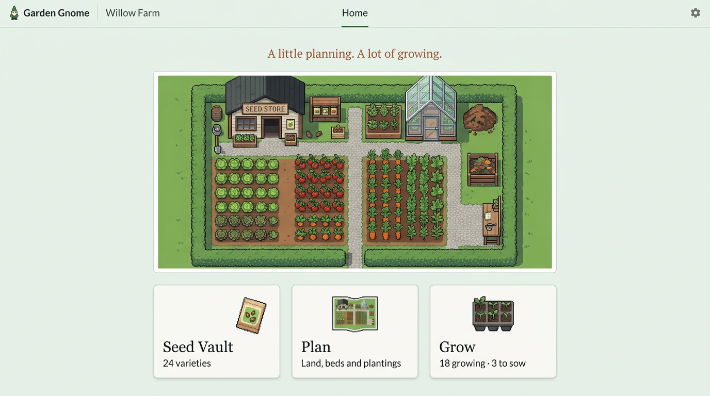
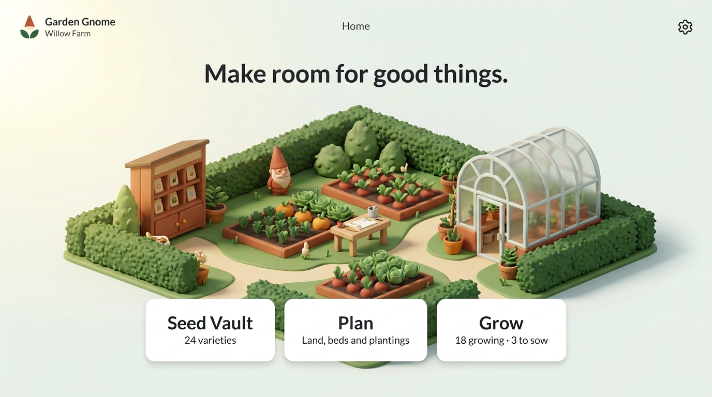
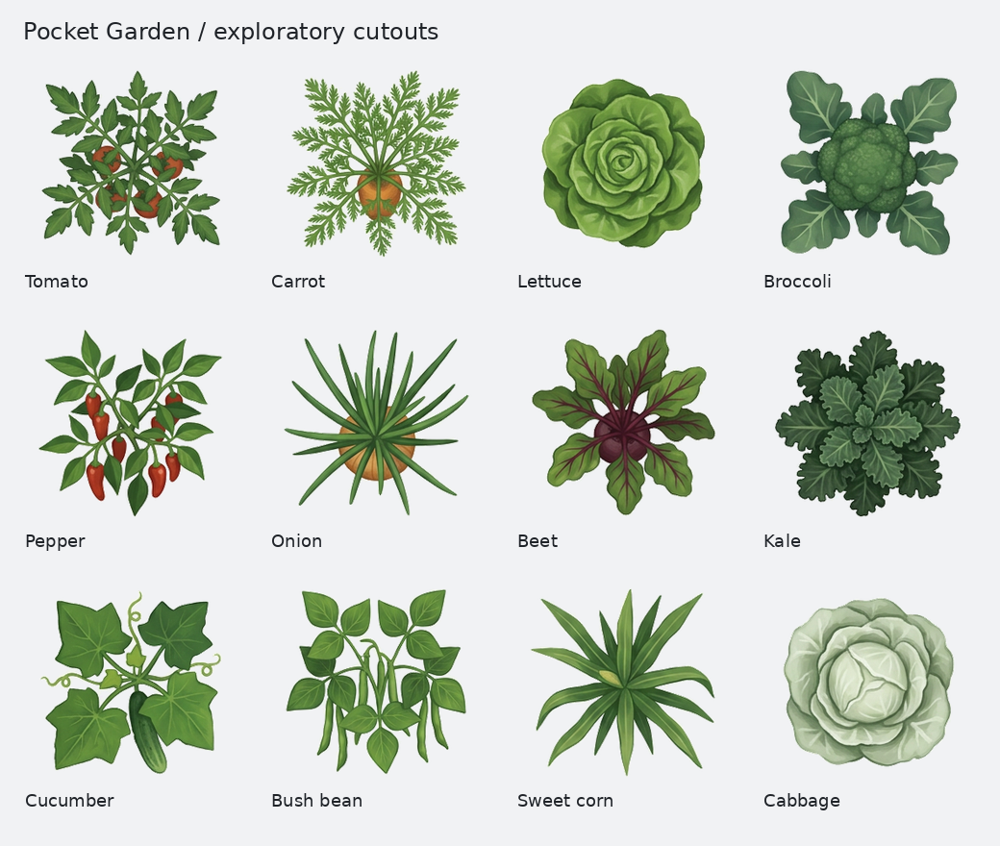
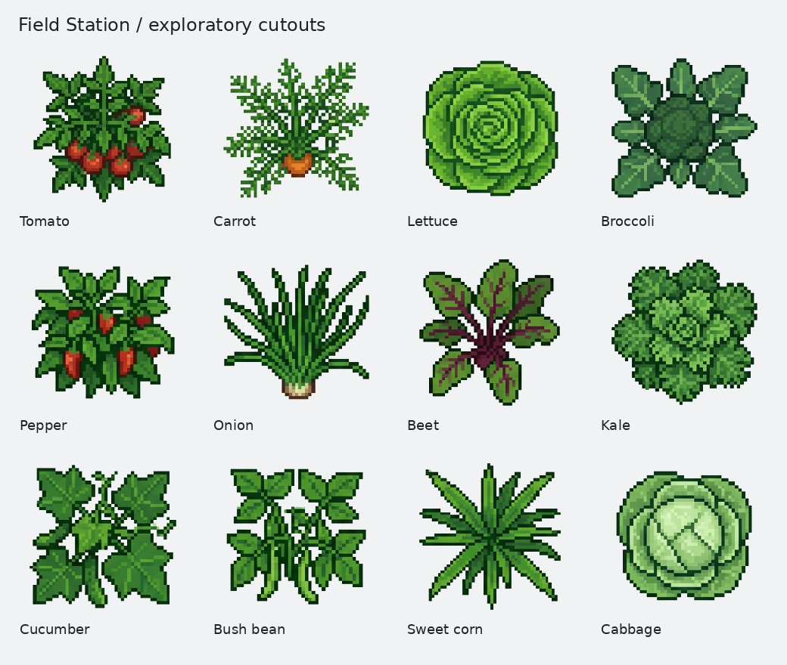
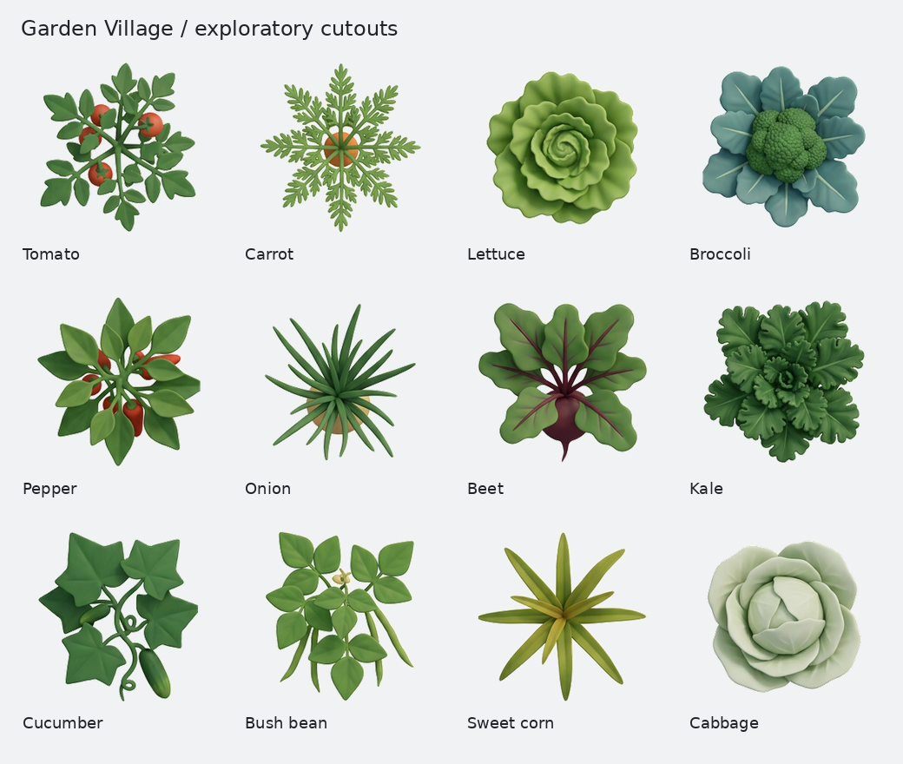
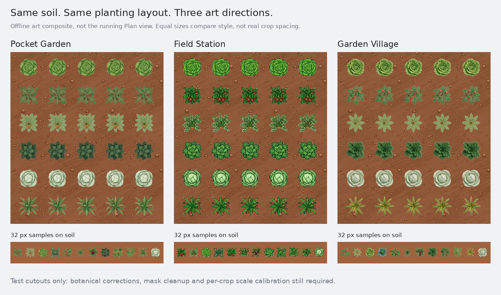
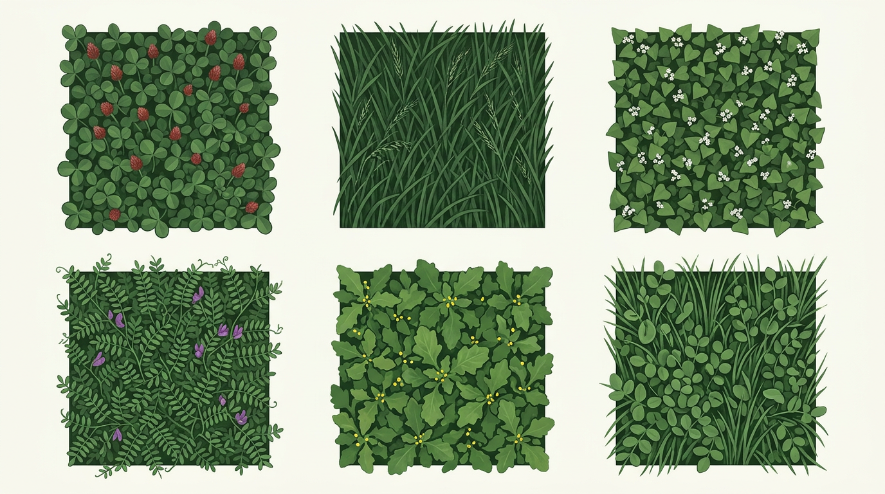
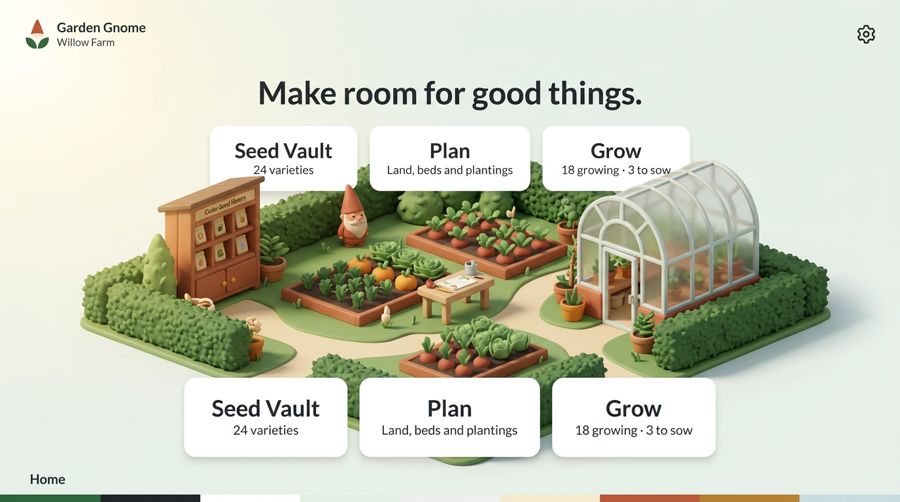

Choose the feeling

Pocket Garden
A treasured handheld garden. Hand-painted beds, a seed cabinet, a tiny gnome and a greenhouse. Warm without becoming a toy.

Field Station
A gardener’s little simulation. Pixel craft, orderly plots and a contained map. The clearest separation between play and work.

Garden Village
Soft matte miniatures and welcoming life-sim whimsy. An original garden world inspired by the warmth of Animal Crossing, not copied characters or props.
The cover-crop sheet below is the chosen illustration reference for terrain and botanical artwork. Next: six variants each of wild grass, lawn, dirt, prepared soil, loam and crimson clover, with stable selection, rotation and blending. The alternatives remain here as the original concept archive.
Direction A / Quaint mobile-game nostalgia
Pocket Garden
Keep as direction
A place to tend, not a game to grind. The three tools correspond to three places in the illustrated garden, while the actual controls stay obvious.
Bring forwardGouache texture, warm morning light, tiny environmental storytelling. The gnome is a discovery, not a talking assistant.
Keep professionalReal Flutter labels and counts, keyboard-focusable tool cards, no illustrated text as a control. Tools available before the illustration loads.
TightenThe scene is tall. On short and narrow screens shrink or simplify the art, never the tool targets. Keep the user's farm name prominent.
Direction B / Indie farming sim
Field Station
Keep as direction
A contained garden map with the quiet satisfaction of an indie sim. Best if you want the playful part to feel structured and a little technical.
Bring forwardDistinct crop rows, miniature seed store, practical potting bench. The scene lives inside a clean frame rather than behind the controls.
Keep professionalRetain the existing sans-serif UI typography. The model introduced serif card headings; that is not a proposed global type change.
TightenPixel crops look much sharper than the app's painted soil. This direction needs deliberate pixel scale and zoom rules, not arbitrary image resizing.
Direction C / Life-sim whimsy
Garden Village
Keep as direction
A little sculpted world you could almost pick up. Soft leaves, cedar furniture and a rounded greenhouse, with the same three clear tools.
Bring forwardTactile materials, simplified plant silhouettes and a restrained terracotta gnome. Warm life-sim influence without game economies.
Keep professionalThe work is still one click away. No avatars, quests, coins, streaks, forced animations or pretend weather readings.
TightenThe headline is too much like a landing page for daily use. Replace it with a quieter farm greeting; keep the garden itself as the welcome.
Plants, not green circles
The same twelve crops in three treatments. These are cleaned exploratory cutouts, not an approved production library. Each image links to a labeled sheet; individual transparent PNGs live in samples/.


Painted canopies
Closest to existing terrain. Leafy heads work well; fine tomato and carrot detail gets weak at small sizes. Some roots and stems are incorrectly exposed.
Raw generation: includes duplicated and erroneous cells


Pixel canopies
Strongest outlines on dark soil. Also the largest style change: noisy detail, inconsistent pixel pitch and some side-on plants need authoring, not just resizing.
Raw generation: includes extra crop variants


Sculpted canopies
Clean leaf masses and charming heads. Promising for larger zooms. Corn is too generic; bean perspective and exposed beet/carrot roots need correction.
Raw generation: twelve-cell reference
Samples: tomato, carrot, lettuce, broccoli, pepper, onion, beet, kale, cucumber, bush bean, sweet corn and cabbage. Selection follows real catalog IDs; there are no invented catalog additions.
Judge them on the soil
An offline composite using the app's actual prepared-soil texture. Positions and image sizes are held equal for comparison; this does not model real crop spacing and is not a screenshot of implemented behavior.

What the test shows: cabbage and lettuce silhouettes hold up best. Fine branching plants lose identity at small scales. Use labels and selection states to carry precision; artwork must not be the only way to identify a crop.
Continuous foliage, not geometric hatching
A living cover-crop layer
Rework for production
Distinct leaf structure makes the cover types readable. These are texture candidates, not seamless tiles: borders, repeated motifs and flowering state still need work.

Use sparse flowers as an optional visual variant, not a claim that every cover crop is flowering. Final coverage should use edge-safe foliage and the existing ground-blending approach, clipped inside the bed. Preserve technical outlines and hit testing.
From concepts to a complete library
Full coverage is inventoried, not claimed complete. The catalog has overlapping types such as pelleted seed and greenhouse variants; they may share an approved botanical canopy. Keep distinct IDs and make reuse explicit rather than assuming one picture per variety.
| Catalog group | Entries | Sampled this round | Production-ready |
|---|---|---|---|
| Vegetables | 109 | 12 types, three styles | 0 |
| Herbs | 37 | Not sampled | 0 |
| Cover crops | 26 | 6 textures | 0 |
| Total | 172 | 18 catalog entries | 0 |
Download full catalog art inventory · Generation review and costs · Production notes
Lock the asset contract
- True 90° overhead canopies. Keep roots underground and avoid side-on produce stickers.
- Transparent individual plant PNGs, shared lighting, root-center anchor and a measured canopy footprint. No baked-in soil disk.
- Keep artwork inside the existing size footprint. Plant spacing, counts, saved geometry and selection behavior must not change.
- Start with one representative canopy, explicitly not a live growth-stage prediction. Add stage-aware variants only if backed by app state.
- Use controlled variants to break repetition without randomising the garden each repaint.
- Keep Wire view and low-zoom line fallbacks. A missing image must still draw a usable plant marker.
Keep the scope small
- Choose a Home direction and a crop direction independently.
- Correct a small pilot set and validate 24 / 32 / 64 px legibility before full-catalog generation.
- Build clean cover-crop tiles and test seams, mixed covers, clipping and far-zoom appearance.
- Home remains a native accessible layout. Decorative artwork should never hide focus or carry the only navigation.
- On narrow screens, stack the real tool cards and shorten the scene; no horizontal map panning to reach a tool.
- Optional restrained motion can come later. No loading delay or forced animation; respect reduced motion.
Rejected first Garden Village proof
DiscardThe first output duplicated all three navigation cards, invented small lettering and added palette swatches. It is retained for provenance, not as a fourth concept.
